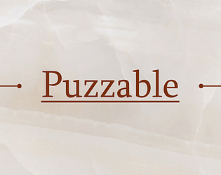
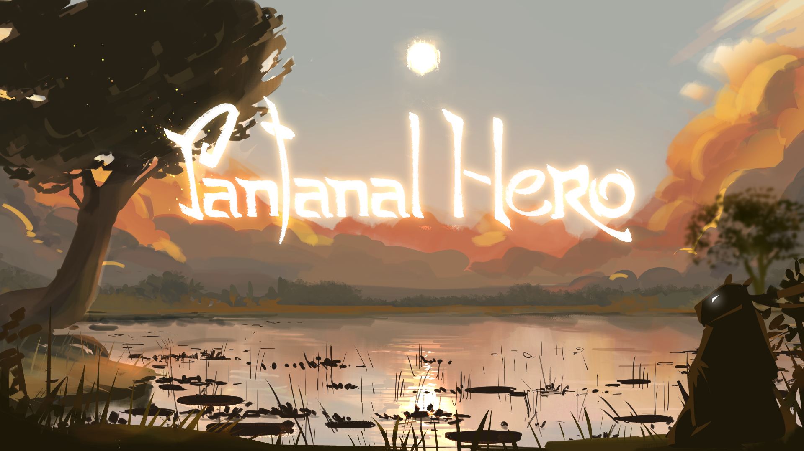
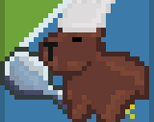
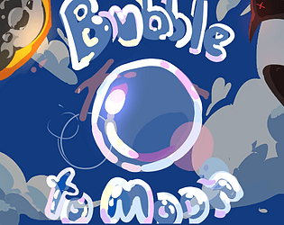
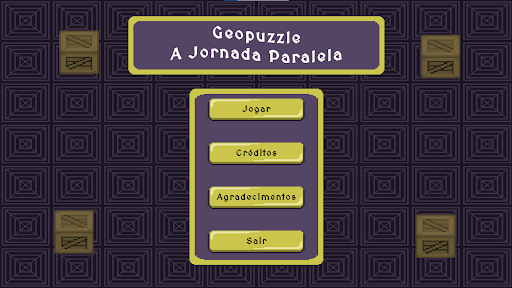
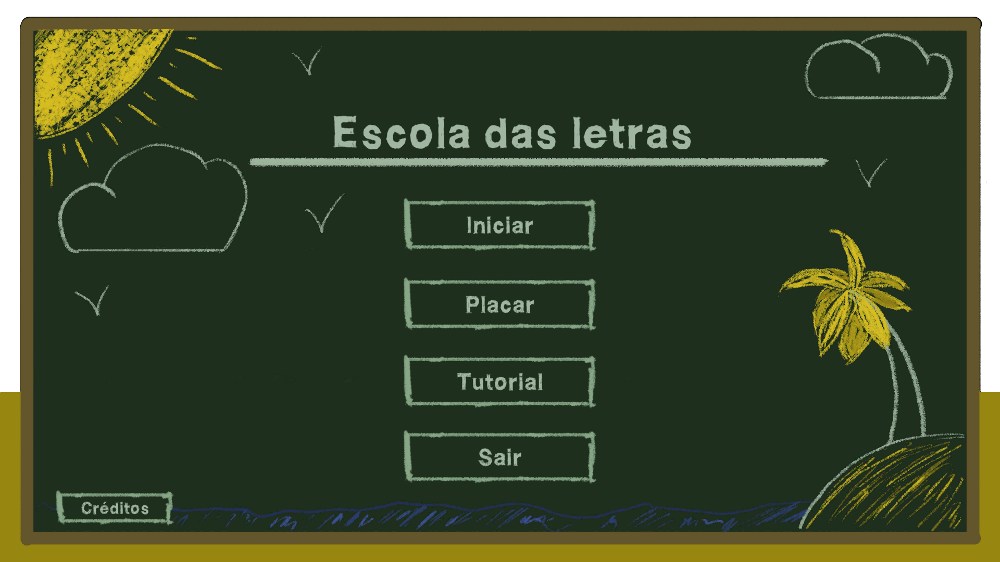

Criando mundos,
linha por linha.
Desenvolvedor de Jogos, especializado em Unity e C#. sempre buscando melhorar e aprender mais.
Quem sou eu
Sou um desenvolvedor de jogos formado pelo IFMS (Instituto Federal de Mato Grosso do Sul) e pós-graduado em User Experience & User Interface pela FacuMinas. Tenho experiência 2 anos de experiência em desenvolvimento de jogos utilizando a Unity e C#, além de conhecimentos em HTML, CSS e JavaScript para desenvolvimento web.
Projetos Trabalhados
Alguns dos projetos que tive a oportunidade de trabalhar, com algums colegas e amigos, durante minha jornada como desenvolvedor de jogos. Cada projeto é uma experiência única e um passo e um crescimento no meu conhecimeto e nas minha habilidades.

Puzzable
Protótipo de jogo de quebra-cabeça, desenvolvido como desafio pessoal e para poder incentivar a criatividade de alguns familiares e amigos.

CAPIVA NINJA
Projeto de iniciação científica com a proposta de estimular o conhecimento sobre queimadas, garimpos, desmatação e contrabando de animais no Pantanal. Com uma capivara antropomorfizada, o jogo é de ação e plataforma onde o jogador enfrenta os perigos causados pelos seres humanos.

Pixel Adventure
Projeto desenvolvido como trabalho de conclusão do curso Técnico em Jogos Digitais, aonde tinhamos que criar um jogo do zero, utilizando os conhecimentos adquiridos durante o curso. O jogo é um simulador de cozinha, contendo elementos de cultura do Mato Grosso do Sul, como algumas cidades e seus pontos turisticos, Contendo sua história e seu prato típico.

Bubble to Moon
Projeto desenvolvido durante a Global Game Jam de 2025, aonde o tema era bolhas. O jogo segue um infite scrooler de uma bolha que tenta chegar até a lua, enfrentando diversos obstáculos e desafios pelo caminho.

GeoPuzzle
Projeto desenvolvido durante meu periodo no GamLab, aonde tinhamos que criar 12 jogos em um periodo de 1 ano. O Geopuzzle é um jogo do estilo Sokoban, aonde o jogador consegue montar o mapa, e tem que achar a melhor forma de chegar até a saída, utilizando o mapa que ele mesmo montou.

Escola das Letras
Projeto desenvolvido durante meu periodo no GamLab, aonde tinhamos que criar 12 jogos em um periodo de 1 ano. O Escola das letras tem como tema principal o Português, aonde o jogador organiza as letras para formar o nome do objeto que está sendo apresentado
Vamos conversar
Estou sempre aberto a novas oportunidades e colaborações. Se você tem um projeto em mente ou deseja saber mais sobre meu trabalho, não hesite em entrar em contato!
pedroars2003@gmail.com